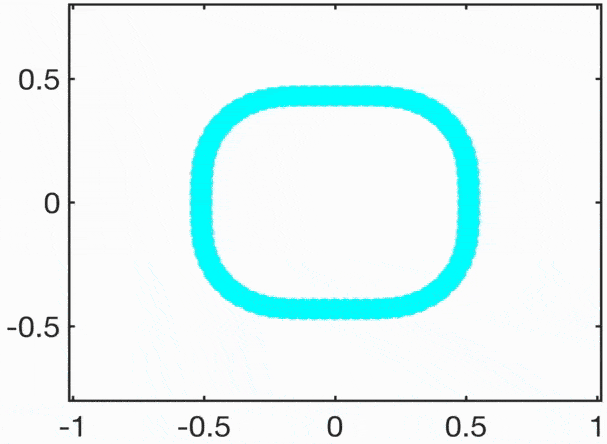

Lipid metabolism and plant adaptation
How triacylglycerol biosynthesis helps tune growth and environmental responses.

Plant Membrane Signaling · UTSC
We study how lipid metabolism, protein lipidation and plasma membrane organization shape cell signaling, plant development and environmental responses—with the long-term goal of developing more resilient crops.
What we study
Connecting membrane organization and lipid biology to plant growth and adaptation.
How triacylglycerol biosynthesis helps tune growth and environmental responses.
How dynamic membrane nanodomains organize signaling at the cell surface.

How reversible protein lipid modifications affect nanodomain organization and signaling activity.
From the lab
Recent research and updates from the Pan Lab.
Our study examines how lipid metabolism and auxin signaling interact during high-temperature-induced hypocotyl elongation.
Read lab newsSelected work